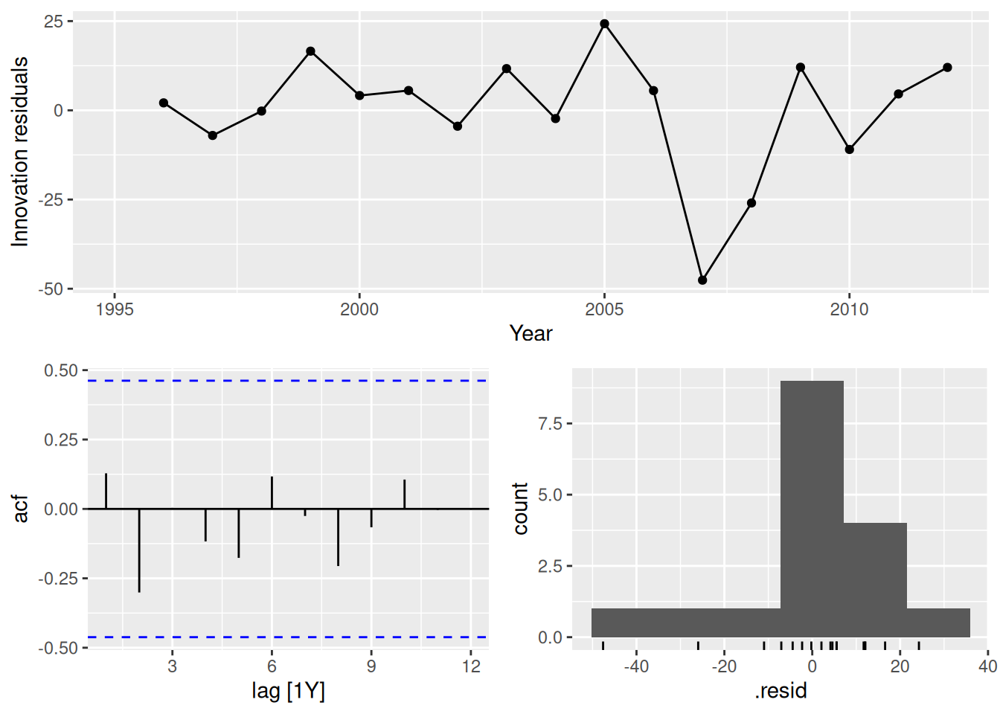
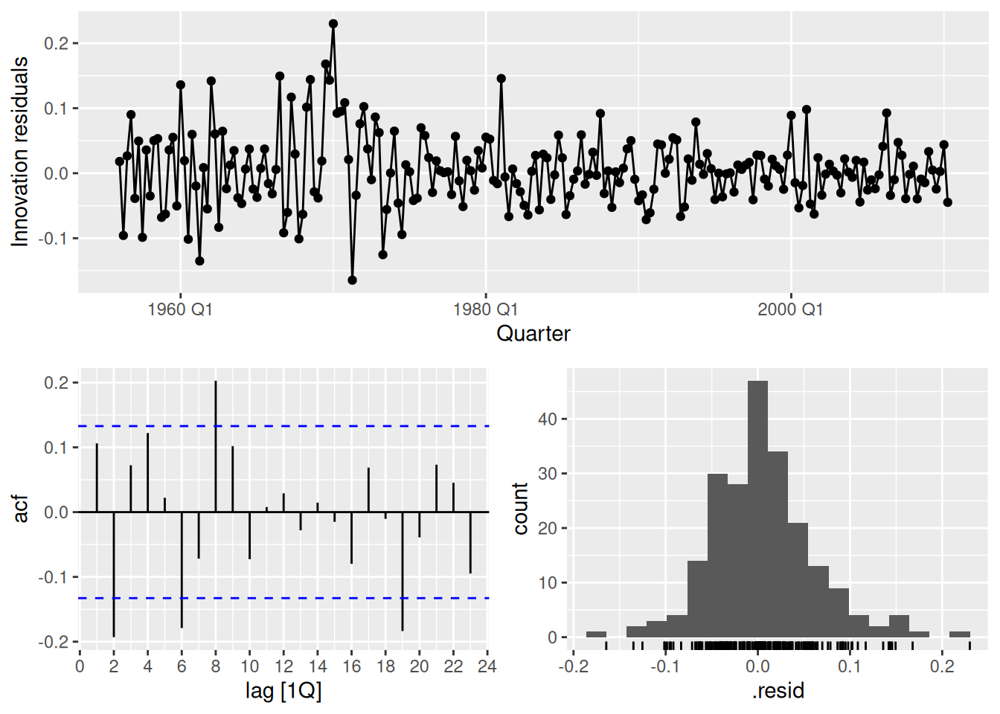

gas <- tail(aus_production, 5 * 4) |> select(Gas)
gas |>
autoplot(Gas) + labs(y = "Petajoules")
For cases 3 and 4 in Section 1.5, list the possible predictor variables that might be useful, assuming that the relevant data are available.
Case 3: the following predictor variables might be useful, assuming that the relevant data are available:
Case 4: the following predictor variables might be useful, assuming that the relevant data are available:
For case 3 in Section 1.5, describe the five steps of forecasting in the context of this project.
Data set of past sales should be obtained, including surrounding information such as the way data were gathered, possible outliers and incorrect records, special values in the data.
Expertise knowledge should be obtained from people responsible for the sales such as seasonal price fluctuations, if there is dependency of the price on the situation in economy, also finding other possible factors which can influence the price.
Possible outliers and inconsistent information should be found (for example very small, zero or even negative prices).
Graphs which show dependency of the sale price on different predictor variables should be considered.
Dependency of the sale price on month of the year should be plot.
A model to start from (for example a linear model) and predictor variables which most likely affect the forecasts should be chosen. Predicting performance of the model should be evaluated.
The model should be changed (for example by transforming parameters, adding or removing predictor variables) and it’s performance evaluated. This should be done iteratively a few times until a satisfactory model is found.
The appropriate software should be deployed to the company and relevant people should be educated how to use this software.
Forecasting accuracy should be checked against new sales. If necessary the model should be updated and then the deployed software.
Show that a 3\times 5 MA is equivalent to a 7-term weighted moving average with weights of 0.067, 0.133, 0.200, 0.200, 0.200, 0.133, and 0.067.
5-term moving average: z_j = \frac{1}{5}(y_{j-2}+y_{j-1}+y_j+y_{j+1}+y_{j+2}). 3-term moving average: u_t = \frac{1}{3}(z_{t-1}+z_t+z_{t+1}). Substituting expression for z_j into the latter formula we get \begin{align*} u_t &= \frac{1}{3}\left(\frac{1}{5}\left(y_{t-3}+y_{t-2}+y_{t-1}+y_{t}+y_{t+1}\right)+\frac{1}{5}\left(y_{t-2}+y_{t-1}+y_t+y_{t+1}+y_{t+2}\right)+\frac{1}{5}\left(y_{t-1}+y_{t}+y_{t+1}+y_{t+2}+y_{t+3}\right)\right).\\ &= \frac{1}{15}\left(y_{t-3}+2y_{t-2}+3y_{t-1}+3y_{t}+3y_{t+1}+2y_{t+2}+y_{t+3}\right), \end{align*} which is a 7-term weighted moving average with weights of 0.067, 0.133, 0.200, 0.200, 0.200, 0.133, and 0.067
Consider the last five years of the Gas data from
aus_production.
gas <- tail(aus_production, 5*4) |> select(Gas)
- Plot the time series. Can you identify seasonal fluctuations and/or a trend-cycle?
gas <- tail(aus_production, 5 * 4) |> select(Gas)
gas |>
autoplot(Gas) + labs(y = "Petajoules")
There is some strong seasonality and a trend.
- Use
classical_decompositionwithtype=multiplicativeto calculate the trend-cycle and seasonal indices.- Do the results support the graphical interpretation from part a?
decomp <- gas |>
model(decomp = classical_decomposition(Gas, type = "multiplicative")) |>
components()
decomp |> autoplot()The decomposition has captured the seasonality and a slight trend.
- Compute and plot the seasonally adjusted data.
as_tsibble(decomp) |>
autoplot(season_adjust) +
labs(title = "Seasonally adjusted data", y = "Petajoules")
- Change one observation to be an outlier (e.g., add 300 to one observation), and recompute the seasonally adjusted data. What is the effect of the outlier?
- Does it make any difference if the outlier is near the end rather than in the middle of the time series?
gas |>
mutate(Gas = if_else(Quarter == yearquarter("2007Q4"), Gas + 300, Gas)) |>
model(decomp = classical_decomposition(Gas, type = "multiplicative")) |>
components() |>
as_tsibble() |>
autoplot(season_adjust) +
labs(title = "Seasonally adjusted data", y = "Petajoules")
gas |>
mutate(Gas = if_else(Quarter == yearquarter("2010Q2"), Gas + 300, Gas)) |>
model(decomp = classical_decomposition(Gas, type = "multiplicative")) |>
components() |>
as_tsibble() |>
autoplot(season_adjust) +
labs(title = "Seasonally adjusted data", y = "Petajoules")The seasonally adjusted data now show no seasonality because the outlier is in the part of the data where the trend can’t be estimated.
Recall your retail time series data (from Exercise 8 in Section 2.10). Decompose the series using X11. Does it reveal any outliers, or unusual features that you had not noticed previously?
set.seed(12345678)
myseries <- aus_retail |>
filter(`Series ID` == sample(aus_retail$`Series ID`, 1))
decomp <- myseries |>
model(x11 = X_13ARIMA_SEATS(Turnover ~ x11())) |>
components()
decomp |> autoplot()Two outliers are now evident in the “irregular” component — in December 1995 and July 2010.
For your retail time series (from Exercise 8 in Section 2.10):
- Create a training dataset consisting of observations before 2011.
- Check that your data have been split appropriately by producing the following plot.
- Calculate seasonal naïve forecasts using
SNAIVE()applied to your training data (myseries_train).- Check the residuals. Do the residuals appear to be uncorrelated and normally distributed?
- Produce forecasts for the test data.
- Compare the accuracy of your forecasts against the actual values.
- How sensitive are the accuracy measures to the amount of training data used?
set.seed(12345678)
myseries <- aus_retail |>
filter(`Series ID` == sample(aus_retail$`Series ID`, 1))
myseries_train <- myseries |>
filter(year(Month) < 2011)
autoplot(myseries, Turnover) +
autolayer(myseries_train, Turnover, colour = "red")The plot indicates that the training data has been extracted correctly.
fit <- myseries_train |>
model(SNAIVE(Turnover))fit |> gg_tsresiduals()The residuals appear very auto-correlated as many lags exceed the significance threshold. This can also be seen in the residual plot, where there are periods of sustained high and low residuals. The distribution does not appear normally distributed, and is not centred around zero.
fc <- fit |>
forecast(new_data = anti_join(myseries, myseries_train))
fc |> autoplot(myseries)bind_rows(
accuracy(fit),
accuracy(fc, myseries)
) |>
select(-State, -Industry, -.model)# A tibble: 2 × 9
.type ME RMSE MAE MPE MAPE MASE RMSSE ACF1
<chr> <dbl> <dbl> <dbl> <dbl> <dbl> <dbl> <dbl> <dbl>
1 Training 0.439 1.21 0.915 5.23 12.4 1 1 0.768
2 Test 0.836 1.55 1.24 5.94 9.06 1.36 1.28 0.601The accuracy on the training data is substantially better than the out-of-sample forecast accuracy. This is common, and especially evident in this example as the model has failed to capture the trend in the data. This can be seen in the mean error, which is above zero as the model predictions do not account for the upward trend.
myseries_accuracy <- function(data, last_training_year) {
myseries_train <- data |>
filter(year(Month) <= last_training_year)
fit <- myseries_train |>
model(SNAIVE(Turnover))
fc <- fit |>
forecast(new_data = anti_join(myseries, myseries_train))
bind_rows(
accuracy(fit),
accuracy(fc, myseries)
) |>
mutate(last_training_year = last_training_year) |>
select(last_training_year, .type, ME:ACF1)
}
as.list(2011:2017) |>
purrr::map_dfr(myseries_accuracy, data = myseries) |>
ggplot(aes(x = last_training_year, y = RMSE, group = .type)) +
geom_line(aes(col = .type))The accuracy on the training data is almost unchanged when the size of the training set is increased. However, the accuracy on the test data decreases as we are averaging RMSE over the forecast horizon, and with less training data the forecasts horizons can be longer.
- Create a training set for household wealth (
hh_budget) by withholding the last four years as a test set.
train <- hh_budget |>
filter(Year <= max(Year) - 4)
- Fit all the appropriate benchmark methods to the training set and forecast the periods covered by the test set.
fit <- train |>
model(
naive = NAIVE(Wealth),
drift = RW(Wealth ~ drift()),
mean = MEAN(Wealth)
)
fc <- fit |> forecast(h = 4)
- Compute the accuracy of your forecasts. Which method does best?
fc |>
accuracy(hh_budget) |>
arrange(Country, MASE)# A tibble: 12 × 11
.model Country .type ME RMSE MAE MPE MAPE MASE RMSSE ACF1
<chr> <chr> <chr> <dbl> <dbl> <dbl> <dbl> <dbl> <dbl> <dbl> <dbl>
1 drift Australia Test 29.1 35.5 29.1 7.23 7.23 1.73 1.48 0.210
2 naive Australia Test 34.7 41.5 34.7 8.64 8.64 2.06 1.73 0.216
3 mean Australia Test 35.7 42.3 35.7 8.89 8.89 2.12 1.76 0.216
4 drift Canada Test 33.3 37.2 33.3 6.09 6.09 1.73 1.57 -0.229
5 naive Canada Test 46.2 51.0 46.2 8.46 8.46 2.40 2.15 -0.0799
6 mean Canada Test 90.4 92.9 90.4 16.7 16.7 4.69 3.92 -0.0799
7 drift Japan Test 14.7 17.9 14.7 2.44 2.44 0.943 0.967 -0.229
8 naive Japan Test 36.3 37.8 36.3 6.06 6.06 2.34 2.04 -0.534
9 mean Japan Test 100. 101. 100. 16.8 16.8 6.45 5.46 -0.534
10 drift USA Test 75.9 76.2 75.9 12.7 12.7 2.88 2.43 -0.561
11 naive USA Test 82.1 82.5 82.1 13.8 13.8 3.12 2.63 -0.423
12 mean USA Test 82.9 83.3 82.9 13.9 13.9 3.15 2.65 -0.423 fc |>
accuracy(hh_budget) |>
group_by(.model) |>
summarise(MASE = mean(MASE)) |>
ungroup() |>
arrange(MASE)# A tibble: 3 × 2
.model MASE
<chr> <dbl>
1 drift 1.82
2 naive 2.48
3 mean 4.10The drift method is better for every country, and on average.
- Do the residuals from the best method resemble white noise?
fit |>
filter(Country == "Australia") |>
select(drift) |>
gg_tsresiduals()
fit |>
filter(Country == "Canada") |>
select(drift) |>
gg_tsresiduals()
fit |>
filter(Country == "Japan") |>
select(drift) |>
gg_tsresiduals()
fit |>
filter(Country == "USA") |>
select(drift) |>
gg_tsresiduals()In all cases, the residuals look like white noise.
- Create a training set for Australian takeaway food turnover (
aus_retail) by withholding the last four years as a test set.
takeaway <- aus_retail |>
filter(Industry == "Takeaway food services") |>
summarise(Turnover = sum(Turnover))
train <- takeaway |>
filter(Month <= max(Month) - 4 * 12)
- Fit all the appropriate benchmark methods to the training set and forecast the periods covered by the test set.
fit <- train |>
model(
naive = NAIVE(Turnover),
drift = RW(Turnover ~ drift()),
mean = MEAN(Turnover),
snaive = SNAIVE(Turnover)
)
fc <- fit |> forecast(h = "4 years")
- Compute the accuracy of your forecasts. Which method does best?
fc |>
accuracy(takeaway) |>
arrange(MASE)# A tibble: 4 × 10
.model .type ME RMSE MAE MPE MAPE MASE RMSSE ACF1
<chr> <chr> <dbl> <dbl> <dbl> <dbl> <dbl> <dbl> <dbl> <dbl>
1 naive Test -12.4 119. 96.4 -1.49 6.66 2.30 2.25 0.613
2 drift Test -93.7 130. 108. -6.82 7.67 2.58 2.46 0.403
3 snaive Test 177. 192. 177. 11.7 11.7 4.22 3.64 0.902
4 mean Test 829. 838. 829. 55.7 55.7 19.8 15.8 0.613The naive method is best here.
- Do the residuals from the best method resemble white noise?
fit |>
select(naive) |>
gg_tsresiduals()
This is far from white noise. There is strong seasonality and increasing variance that has not been accounted for by the naive model.
Forecast the Chinese GDP from the
global_economydata set using an ETS model. Experiment with the various options in theETS()function to see how much the forecasts change with damped trend, or with a Box-Cox transformation. Try to develop an intuition of what each is doing to the forecasts.
[Hint: use
h=20when forecasting, so you can clearly see the differences between the various options when plotting the forecasts.]
china <- global_economy |>
filter(Country == "China")
china |> autoplot(GDP)
china |> autoplot(box_cox(GDP, 0.2))china |> features(GDP, guerrero)# A tibble: 1 × 2
Country lambda_guerrero
<fct> <dbl>
1 China -0.0345Making \lambda=0.2 looks ok.
The Guerrero method suggests an even stronger transformation. Let’s also try a log.
fit <- china |>
model(
ets = ETS(GDP),
ets_damped = ETS(GDP ~ trend("Ad")),
ets_bc = ETS(box_cox(GDP, 0.2)),
ets_log = ETS(log(GDP))
)
fit# A mable: 1 x 5
# Key: Country [1]
Country ets ets_damped ets_bc ets_log
<fct> <model> <model> <model> <model>
1 China <ETS(M,A,N)> <ETS(M,Ad,N)> <ETS(A,A,N)> <ETS(A,A,N)>augment(fit)# A tsibble: 232 x 7 [1Y]
# Key: Country, .model [4]
Country .model Year GDP .fitted .resid .innov
<fct> <chr> <dbl> <dbl> <dbl> <dbl> <dbl>
1 China ets 1960 59716467625. 49001691297. 10714776328. 0.219
2 China ets 1961 50056868958. 66346643194. -16289774236. -0.246
3 China ets 1962 47209359006. 51607368186. -4398009180. -0.0852
4 China ets 1963 50706799903. 47386494407. 3320305495. 0.0701
5 China ets 1964 59708343489. 51919091574. 7789251914. 0.150
6 China ets 1965 70436266147. 63350421234. 7085844913. 0.112
7 China ets 1966 76720285970. 76289186599. 431099371. 0.00565
8 China ets 1967 72881631327. 82708375812. -9826744486. -0.119
9 China ets 1968 70846535056. 75804820984. -4958285928. -0.0654
10 China ets 1969 79705906247. 72222259470. 7483646777. 0.104
# ℹ 222 more rowsfit |>
forecast(h = "20 years") |>
autoplot(china, level = NULL)
Find an ETS model for the Gas data from
aus_productionand forecast the next few years. Why is multiplicative seasonality necessary here? Experiment with making the trend damped. Does it improve the forecasts?
aus_production |> autoplot(Gas)
fit <- aus_production |>
model(
hw = ETS(Gas ~ error("M") + trend("A") + season("M")),
hwdamped = ETS(Gas ~ error("M") + trend("Ad") + season("M")),
)
fit |> glance()# A tibble: 2 × 9
.model sigma2 log_lik AIC AICc BIC MSE AMSE MAE
<chr> <dbl> <dbl> <dbl> <dbl> <dbl> <dbl> <dbl> <dbl>
1 hw 0.00324 -831. 1681. 1682. 1711. 21.1 32.2 0.0413
2 hwdamped 0.00329 -832. 1684. 1685. 1718. 21.1 32.0 0.0417fit |>
select(hw) |>
gg_tsresiduals()
fit |> tidy()# A tibble: 19 × 3
.model term estimate
<chr> <chr> <dbl>
1 hw alpha 0.653
2 hw beta 0.144
3 hw gamma 0.0978
4 hw l[0] 5.95
5 hw b[0] 0.0706
6 hw s[0] 0.931
7 hw s[-1] 1.18
8 hw s[-2] 1.07
9 hw s[-3] 0.816
10 hwdamped alpha 0.649
11 hwdamped beta 0.155
12 hwdamped gamma 0.0937
13 hwdamped phi 0.980
14 hwdamped l[0] 5.86
15 hwdamped b[0] 0.0994
16 hwdamped s[0] 0.928
17 hwdamped s[-1] 1.18
18 hwdamped s[-2] 1.08
19 hwdamped s[-3] 0.817 fit |>
augment() |>
filter(.model == "hw") |>
features(.innov, ljung_box, lag = 24)# A tibble: 1 × 3
.model lb_stat lb_pvalue
<chr> <dbl> <dbl>
1 hw 57.1 0.000161fit |>
forecast(h = 36) |>
filter(.model == "hw") |>
autoplot(aus_production)While the point forecasts look ok, the intervals are excessively wide.
This exercise uses data set
LakeHurongiving the level of Lake Huron from 1875–1972.
- Convert the data to a tsibble object using the
as_tsibble()function.- Fit a piecewise linear trend model to the Lake Huron data with a knot at 1920 and an ARMA error structure.
- Forecast the level for the next 30 years. Do you think the extrapolated linear trend is realistic?
huron <- as_tsibble(LakeHuron)
fit <- huron |>
model(ARIMA(value ~ trend(knot = 1920)))
report(fit)Series: value
Model: LM w/ ARIMA(2,0,0) errors
Coefficients:
ar1 ar2 trend(knot = 1920)trend trend(knot = 1920)trend_46
0.9628 -0.3107 -0.0572 0.0633
s.e. 0.0973 0.0983 0.0161 0.0265
intercept
580.9391
s.e. 0.5124
sigma^2 estimated as 0.4594: log likelihood=-98.86
AIC=209.73 AICc=210.65 BIC=225.24fit |>
forecast(h = 30) |>
autoplot(huron) + labs(y = "feet")
It seems unlikely that there was an increasing trend from 1973 to 2002, but the prediction intervals are very wide so they probably capture the actual values. Historical data on the level of Lake Huron can be obtained from the NOAA.
For the retail time series considered in earlier chapters:
- Develop an appropriate dynamic regression model with Fourier terms for the seasonality. Use the AIC to select the number of Fourier terms to include in the model. (You will probably need to use the same Box-Cox transformation you identified previously.)
set.seed(12345678)
myseries <- aus_retail |>
filter(
`Series ID` == sample(aus_retail$`Series ID`, 1),
Month < yearmonth("2018 Jan")
)
myseries |> features(Turnover, guerrero)# A tibble: 1 × 3
State Industry lambda_guerrero
<chr> <chr> <dbl>
1 Northern Territory Clothing, footwear and personal accessory … 0.0776myseries |> autoplot(log(Turnover))fit <- myseries |>
model(
`K=1` = ARIMA(log(Turnover) ~ trend() + fourier(K = 1) +
pdq(0:2, 0, 0:2) + PDQ(0:1, 0, 0:1)),
`K=2` = ARIMA(log(Turnover) ~ trend() + fourier(K = 2) +
pdq(0:2, 0, 0:2) + PDQ(0:1, 0, 0:1)),
`K=3` = ARIMA(log(Turnover) ~ trend() + fourier(K = 3) +
pdq(0:2, 0, 0:2) + PDQ(0:1, 0, 0:1)),
`K=4` = ARIMA(log(Turnover) ~ trend() + fourier(K = 4) +
pdq(0:2, 0, 0:2) + PDQ(0:1, 0, 0:1)),
`K=5` = ARIMA(log(Turnover) ~ trend() + fourier(K = 5) +
pdq(0:2, 0, 0:2) + PDQ(0:1, 0, 0:1)),
`K=6` = ARIMA(log(Turnover) ~ trend() + fourier(K = 6) +
pdq(0:2, 0, 0:2) + PDQ(0:1, 0, 0:1))
)
glance(fit)# A tibble: 6 × 10
State Industry .model sigma2 log_lik AIC AICc BIC ar_roots ma_roots
<chr> <chr> <chr> <dbl> <dbl> <dbl> <dbl> <dbl> <list> <list>
1 Northern … Clothin… K=1 0.00664 383. -748. -748. -713. <cpl> <cpl>
2 Northern … Clothin… K=2 0.00652 389. -756. -755. -713. <cpl> <cpl>
3 Northern … Clothin… K=3 0.00626 400. -774. -773. -723. <cpl> <cpl>
4 Northern … Clothin… K=4 0.00596 411. -792. -791. -734. <cpl> <cpl>
5 Northern … Clothin… K=5 0.00480 453. -873. -872. -811. <cpl> <cpl>
6 Northern … Clothin… K=6 0.00437 470. -906. -905. -841. <cpl> <cpl> Including 6 harmonics minimises the AICc (and AIC/BIC) for this series.
fit <- transmute(fit, best = `K=6`)
report(fit)Series: Turnover
Model: LM w/ ARIMA(1,0,1)(1,0,0)[12] errors
Transformation: log(Turnover)
Coefficients:
ar1 ma1 sar1 trend() fourier(K = 6)C1_12
0.9632 -0.3755 0.1761 0.0041 -0.0809
s.e. 0.0165 0.0502 0.0542 0.0006 0.0080
fourier(K = 6)S1_12 fourier(K = 6)C2_12 fourier(K = 6)S2_12
-0.1258 0.0381 -0.0882
s.e. 0.0080 0.0052 0.0052
fourier(K = 6)C3_12 fourier(K = 6)S3_12 fourier(K = 6)C4_12
-0.0206 -0.0815 -0.0294
s.e. 0.0045 0.0045 0.0042
fourier(K = 6)S4_12 fourier(K = 6)C5_12 fourier(K = 6)S5_12
-0.0538 -0.0554 -0.0540
s.e. 0.0042 0.0041 0.0041
fourier(K = 6)C6_12 intercept
-0.0230 1.3317
s.e. 0.0029 0.1231
sigma^2 estimated as 0.004368: log likelihood=470.23
AIC=-906.46 AICc=-904.65 BIC=-840.54The chosen model is a linear trend (will be exponential after back-transforming) and fourier terms with 5 harmonics. The error model is ARIMA(1,0,1)(1,0,1).
- Check the residuals of the fitted model. Does the residual series look like white noise?
gg_tsresiduals(fit)
The residuals look well behaved.
- Compare the forecasts with those you obtained earlier using alternative models.
fit <- myseries |>
model(
dynamic = ARIMA(log(Turnover) ~ trend() + fourier(K = 6) +
pdq(0:2, 0, 0:2) + PDQ(0:1, 0, 0:1)),
arima = ARIMA(log(Turnover)),
ets = ETS(Turnover)
)
fit |>
forecast() |>
autoplot(filter(myseries, year(Month) > 2010), level = 80, alpha = 0.5)